AI Academy · Level 4 · Grade 9 · Week 35 · Student lesson
Capstone Train, Analyze, Improve
Learn to understand, design, build, test and explain AI systems responsibly.
Project: Responsible Plant Classifier
Before you start
Week 26: a reproducible comparison identifies data, version and settings.
Plan time to read, investigate and explain. Keep predictions separate from observations.
Student lesson · 1 of 18
Your mission
Start with the target: Run a frozen final evaluation with complete accounting. Try the recall before opening notes.
Your learning target
I can run a frozen final evaluation with complete accounting.
I can separate error analysis from an untouched-test claim.
I can document revisions and their evidence status.
Remember before reading
Close your notes first. A rough first answer helps us choose the right starting point; it is not a score for your ability.
Without opening the old lesson, explain one key idea from Capstone Dataset and Baseline. Give an example and a mistake that the idea helps you avoid.
Without opening the old lesson, explain one key idea from Proxy Features and Fairness. Give an example and a mistake that the idea helps you avoid.
Without opening the old lesson, explain one key idea from Feature Engineering. Give an example and a mistake that the idea helps you avoid.
After trying, check the relevant lesson or ask your teacher. Change the part of your explanation that the evidence shows was wrong.
One evidence-based improvement follows a reproducible training run, metric audit, error clusters, and subgroup analysis.
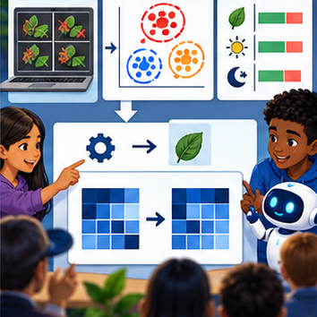
Your target
LEARNING TARGET A new model reduces validation errors from 8 to 5 but the team also removed three hard cases. Can improvement be attributed to the model? Propose a repair to the experiment.
Builder name and experiment date:
Readiness for the connected explanation
What changes after final-test labels inform a revision?
This week’s end goal
By the end, I can explain capstone train, analyze, improve using a traced example and a stated limitation.
Student lesson · 2 of 18
Notice the evidence
Investigate the supplied Capstone Train, Analyze, Improve case. Separate observations, given facts and assumptions before choosing an explanation.
PICTURE ENTRY
Notice → Predict → Explain
Begin with visible evidence; do not explain more than the picture and information support.
Start with this puzzle
MYSTERY The team must use capstone train, analyze, improve to solve a model-building problem. What information do they have? What important evidence is still missing?
Name three visible details without interpreting them.
Predict the data, model, or evaluation decision being made.
Identify one hidden assumption that could change the result.
State what evidence would confirm or reject your prediction.
My prediction and supporting evidence:
A closer explanation
The teacher releases final-test labels only after checking the freeze record. Score baseline and candidate on the same planned rows. Save every prediction, denominator and failure.
Do not edit a model while reading labels and then present only the edited version as the original test.
Use fictional classroom data throughout this investigation. Keep the task, units, reference labels and data split visible as you reason.
Earlier weeks supplied the model-building process; this week examines capstone evaluation and revision.
Student lesson · 3 of 18
See how it works
Follow the mechanism for Capstone Train, Analyze, Improve. Connect each labelled input, deciding step and result.
ML MECHANISM
Input → Model → Evidence
Trace the information, fitted behavior, and evaluation proof separately.
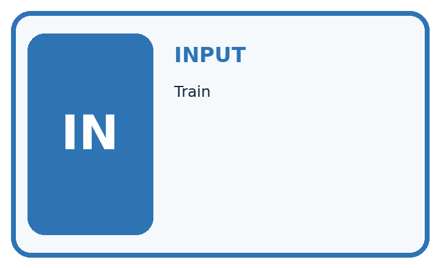
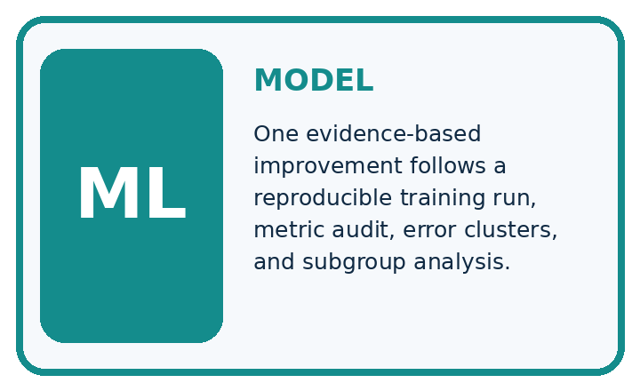
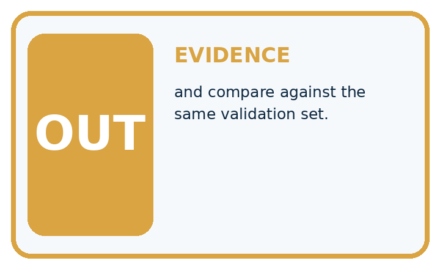
Question to explain
QUESTION Train, audit, change one factor, and compare against the same validation set.
MODEL IDEA One evidence-based improvement follows a reproducible training run, metric audit, error clusters, and subgroup analysis.
PROOF NEEDED Use an unseen case, visible calculation, error analysis, and a stated limitation.
How the mechanism works
UNDER THE HOOD Model v1 passes 14/20 validation cases; evening accuracy is 40%. The six failed cases are low-light cases.
One of those same six also has a disputed reference label; that is an overlapping review flag, not a seventh failed case.
Draw a fresh data → model → prediction → evaluation trace:
A closer explanation
Illustrative frozen test has 12 rows: candidate[[7, 1],[2, 2]], baseline[[8, 0],[4, 0]], blocked positive. Candidate accuracy 9/12=75 percent, precision 2/3 and recall 2/4; baseline accuracy 8/12 about 66.7 percent.
The candidate adds one false alarm and misses two rather than four blocked cases.
Before continuing, underline the decision rule and circle the evidence that supports the conclusion. Explain the example to a partner without replacing the counts or conditions with a stronger claim.
Keep the distinction between an observed result and a proposed next step.
Connect the picture and the explanation
Point to the input, the deciding step and the result in this week’s visual. Explain the same step in ordinary words. A picture helps when you can say what each part represents.
Student lesson · 4 of 18
Compare the cases
Compare the supplied cases for Capstone Train, Analyze, Improve. Identify the detail that changes the conclusion.
EVALUATION DESIGN
Four Tests, Four Kinds of Evidence
A system is not understood until it survives more than one comfortable example.


NORMAL Expected data and expected behavior.
Keep this boundary clear
BOUNDARY Value close to a threshold, ambiguous label, or uncertain prediction.
MISSING Necessary field, label, source, or measurement is unavailable.
SHIFTED New lighting, species, device, subgroup, or time condition.
RELEASE RULE Passing one case never proves generalization. Predefine expected behavior for all four categories.
Which case most threatens today's claim, and why?
Change one thing in the pictured case
Change one thing
Change: A revision fixes one miss but creates two extra false alarms.
Predicted result
Prediction: TP 5, FN 1, FP 3, TN 7 gives 12/16=75% accuracy and 5/6 recall.
Why the result follows
Reason: Recall rises while accuracy falls; the preferred revision depends on declared error consequences.
Student lesson · 5 of 18
Words that unlock the idea
Use the vocabulary of Capstone Train, Analyze, Improve to explain a concrete decision, rather than only memorising definitions.
VOCABULARY
Words You Can Calculate and Defend
A definition matters when it lets you interpret a new dataset, model, or result.
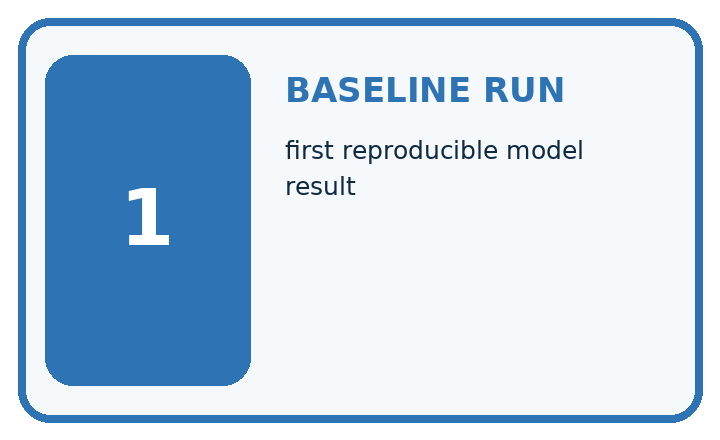
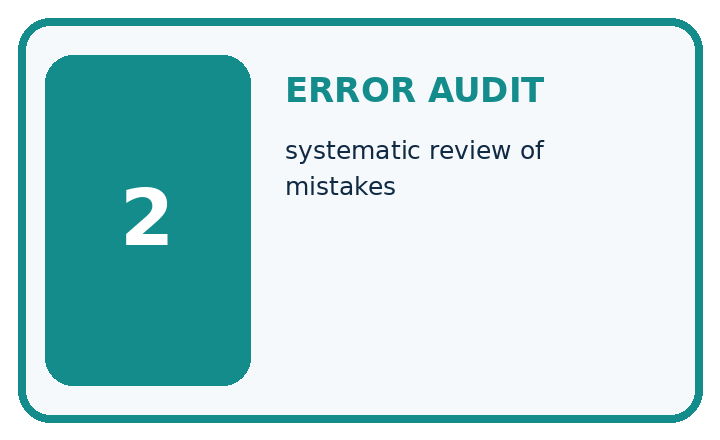
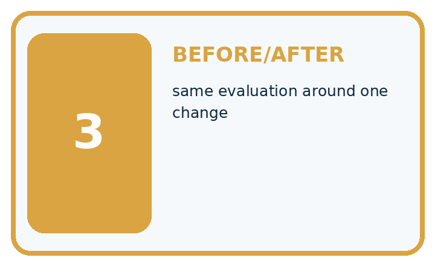
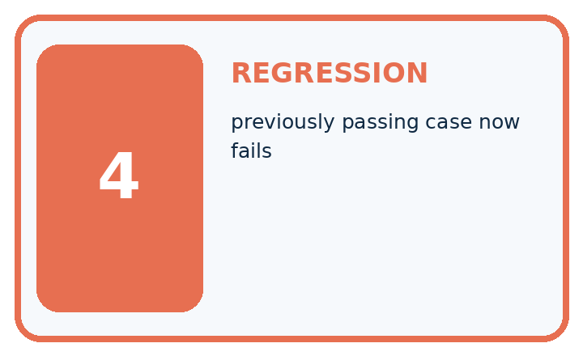
| Term | Precise meaning | My ML example |
|---|---|---|
| baseline run | first reproducible model result | |
| error audit | systematic review of mistakes | |
| before/after | same evaluation around one change | |
| regression | previously passing case now fails |
MISCONCEPTION TO REPAIR A higher overall score proves every important aspect improved.
Repair the claim using a definition, calculation, or test record:
Words used in the closer explanation
| Word | Meaning |
|---|---|
| Final evaluation | Assessment of the frozen procedure on held-out evidence |
| Error audit | A documented inspection of mistakes and missing predictions |
| Revision log | A record of changes, reasons and affected evidence |
| Evidence status | Whether a result is development, untouched test or post-test reuse |
Student lesson · 6 of 18
Follow a worked example
Follow the worked trace for Capstone Train, Analyze, Improve, predict a step, then compare with its explanation.
WORKED EVIDENCE
Reason Step by Step
Predict first. Then check each step. A correct answer without visible evidence cannot be audited.
Four-step worked evidence for Week 35: Capstone Train, Analyze, Improve
Step 1
STEP 1 Model v1 passes 14/20 validation cases; evening accuracy is 40%.
Step 2
STEP 2 The six failed cases are low-light cases. One of those same six also has a disputed reference label; that is an overlapping review flag, not a seventh failed case.
Step 3
STEP 3 Add reviewed low-light training examples while freezing features and model settings.
Step 4
STEP 4 Model v2 passes 17/20; evening rises to 70%; inspect every old pass and record remaining limits.
CHECK Verify the denominator, unit, split, class definition, and data version before interpreting a score.
Recalculate, retrace, or restate the evidence independently:
A closer explanation
Capstone evaluation and revision at a glance
Learn from the worked case
Cover the result before checking it. Say what is given, choose the procedure, and follow one step at a time. Then uncover the result and explain your first mismatch. Ask why a step is allowed, not only what number it produces.
A pictorial worked case: Capstone Train, Analyze, Improve
Choose the next capstone revision from explicit false alarms and misses.
The facts we will use
Supplied facts
Positive=spotted. CandidateTP4, FN 2, FP 1, TN 9; baselineTP0, FN 6, FP 0, TN 10. Both evaluate the same16 cases.
Supplied facts
All inputs and outcomes in this worked example are invented classroom data; no real model run is claimed.
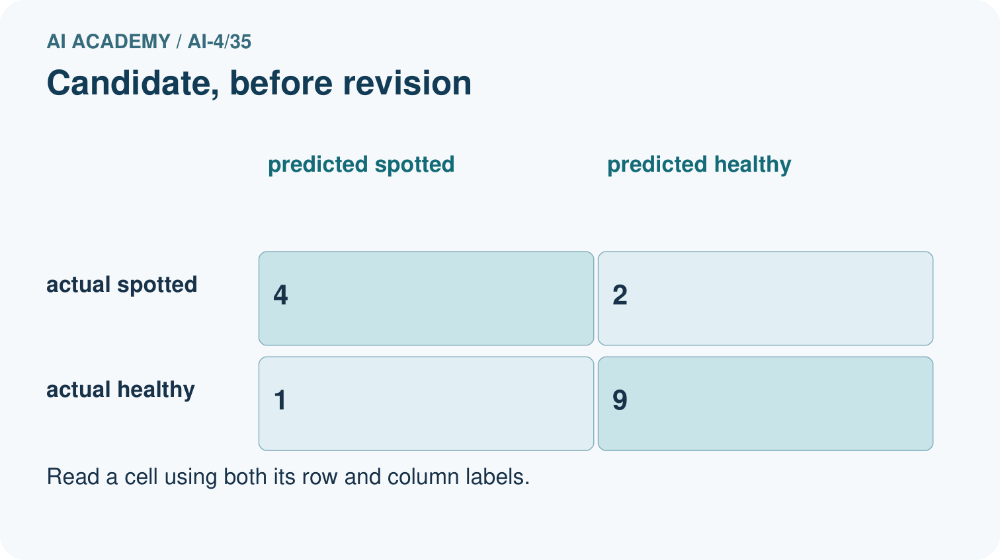
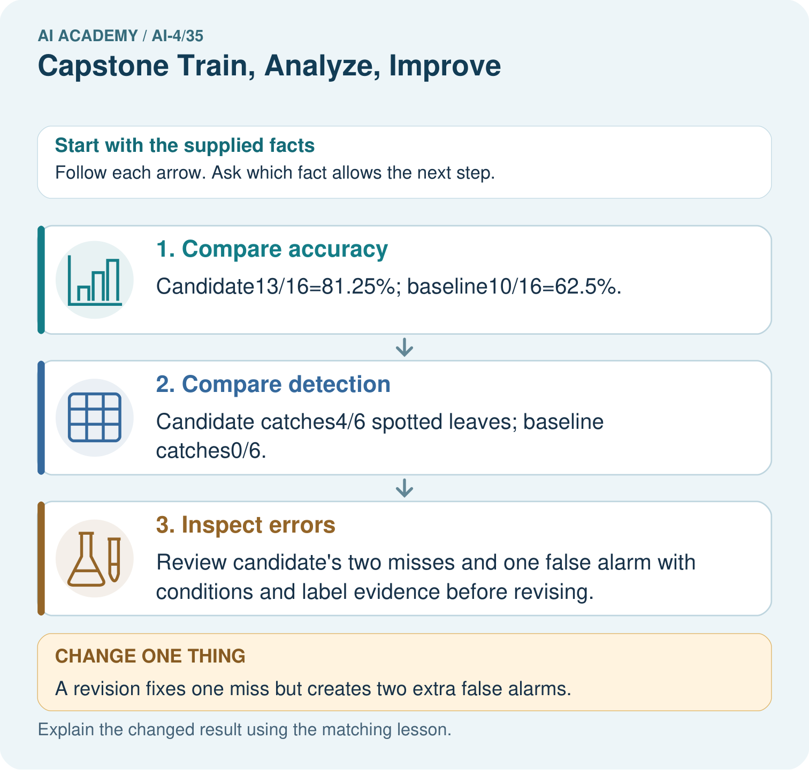
Read the picture one step at a time
Why this result follows
Why the result follows
Read the picture in order. Review candidate’s two misses and one false alarm with conditions and label evidence before revising. The arrows show which recorded input or intermediate result each decision uses.
Explain the deciding step aloud before checking the changed case; pointing to the final answer alone does not show how it follows.
What this example does not establish
Keep the stated limit
Any case-driven revision makes these records development evidence for that revision; reserve a fresh final set.
Keep the stated limit
Read the labelled picture: Why is “the revision is better” incomplete? Point to the relevant step in the picture, then write the changed result and the rule or evidence that supports it.
Keep the stated limit
Change one thing: A revision fixes one miss but creates two extra false alarms. Predict the result before checking the explanation. What remains the same?
Student lesson · 7 of 18
Find and repair a mistake
Find the unsupported step in the Capstone Train, Analyze, Improve claim and explain a repair using the supplied evidence.
Find the first error
ERROR DETECTIVE
Compare → Diagnose → Repair
Do not patch the answer. Find the earliest unsupported assumption, data problem, or experiment error.
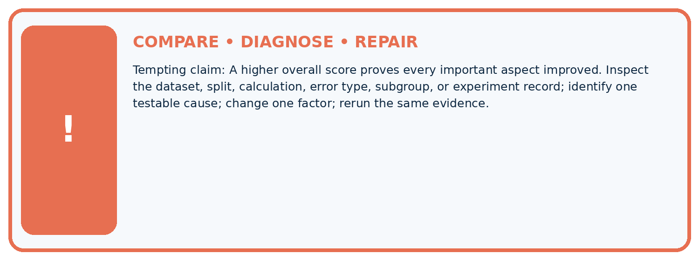
| Evidence record | Expected | Actual | Likely cause / next test |
|---|---|---|---|
| normal case | passes | ||
| boundary case | defined behavior | ||
| missing case | safe fallback | ||
| shifted case | measured limit |
CLAIM TO CHALLENGE A higher overall score proves every important aspect improved.
Diagnose one cause and name the cleanest next experiment:
A closer explanation
Check the claim against the facts
Submit the frozen test report, error audit, revision proposal and updated model card. A revision proposal may conclude that more appropriate data or a simpler baseline is preferable.
If no fresh test is available, stop at a transparent proposal instead of claiming the revision has been independently validated.
Student lesson · 8 of 18
Practise together
Practise Capstone Train, Analyze, Improve with support, then explain the deciding step in your own words.
ML STUDIO
Specify Before You Run
A trustworthy result can be reproduced from the recorded data, code, settings, and evaluation rule.

Experiment record
Question to explain
QUESTION + intended use + success threshold
DATA version + grouped split + leakage check
CODE/preprocessing + features + model + settings + seed
METRICS + positive class + units + denominators
PREDICTIONS + errors + subgroup slices + limitations
HUMAN reviewer + release, revise, limit, or stop decision
Write the minimum record needed to reproduce today's result:
A closer explanation
If dim examples account for both misses, record that observation and inspect collection conditions. It is a hypothesis for investigation, not proof that lighting caused the failures.
A proposed feature or model change creates version 2. Scores on the same inspected test must be labelled post-test development.
Practise with less help: Audit a difference
Use workbook W2 for the connected example “Capstone evaluation and revision”. First fill the input and rule boxes. Try the middle steps before asking for a hint. After a hint, try the next step yourself.
| Plan | Do | Check |
|---|---|---|
| What is given? Which rule or procedure applies? | Record each intermediate step. | Does the result follow? What remains unknown? |
Explain your trace to a partner. Your partner points to one step to check. Swap roles on the next case. Each person writes their own explanation.
Check your reasoning
Use the worked case for Capstone evaluation and revision. Proposed explanation: “A final answer is enough”. Decide whether this explanation is supported.
Point to the step or supplied fact that decides; explain your repair if needed.
Answer on your own before discussion. If you are unsure, say which step you need help with.
Explain the picture
Why is “the revision is better” incomplete? Point to the relevant step in the picture, then write the changed result and the rule or evidence that supports it.
This is supported practice. Keep the separately named independent case for an attempt before feedback.
Student lesson · 9 of 18
Run the investigation
Investigate Capstone Train, Analyze, Improve. Record the prediction, actual observation or labelled paper trace, explanation and next test separately.
EVIDENCE LAB
Predict → Run → Calculate → Interpret
Keep the test conditions fixed, record every result, and change only one planned factor.
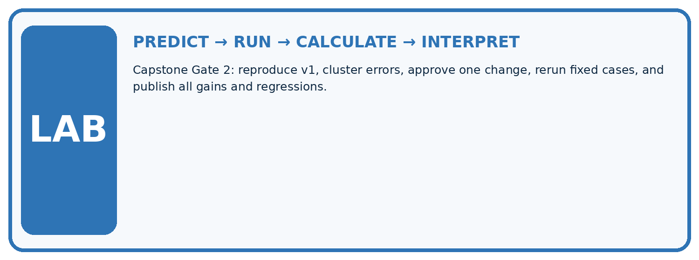
1. Write the hypothesis and expected evidence before running.
2. Capstone Gate 2: reproduce v1, cluster errors, approve one change, rerun fixed cases, and publish all gains and regressions.
3. Run one normal, one boundary, one missing, and one shifted case.
4. Calculate the metric from raw counts or row-level errors.
5. Interpret what changed, what did not, and what remains unsafe or unknown.
| Case | Prediction | Actual | Calculation / evidence | Meaning / next test |
|---|---|---|---|---|
| Normal | ||||
| Boundary | ||||
| Missing | ||||
| Shifted |
Plan → try → check
Before trying: what do I expect, and why? While trying: which step could first go wrong? Afterwards: what did I actually observe, and what should change? Keep “not run” if you only traced the procedure.
Student lesson · 10 of 18
Build your understanding
Move from recall to tracing, diagnosis and transfer in Capstone Train, Analyze, Improve. Explain why each step is justified.
MASTERY
From Knowing the Word to Owning the Idea
Move upward only when you can produce evidence without copying the example.

DEFINE Use all four terms precisely: baseline run, error audit, before/after, regression.
CALCULATE Reproduce the worked evidence with units and denominator.
TRACE Explain the data, code or decision path.
DIAGNOSE A higher overall score proves every important aspect improved.
TRANSFER Solve a fresh dataset or model case.
IMPROVE Change one cause and rerun fixed evidence.
DEFEND State intended use, metric, limitation, and human responsibility.
MASTERY RULE A coached calculation becomes mastery only after a different case is completed independently.
Student lesson · 11 of 18
Connect your project
Apply this week’s idea to Responsible Plant Classifier. Keep an annotated decision and the evidence supporting it.
CUMULATIVE PROJECT
Responsible Plant Classifier
Every week adds one reviewable artifact to the same evidence-based capstone.
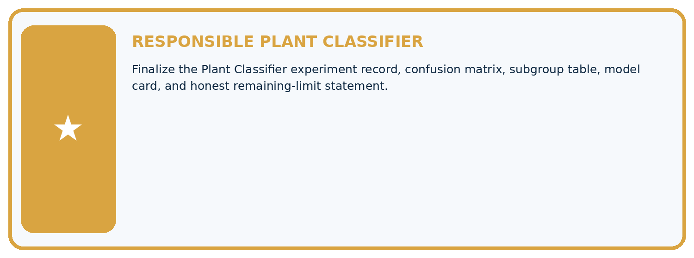
THIS WEEK'S CHECKPOINT Finalize the Plant Classifier experiment record, confusion matrix, subgroup table, model card, and honest remaining-limit statement.
Which requirement or risk does this artifact address?
Which dataset, split, code, and metric version does it use?
What normal and shifted cases were tested?
What remains uncertain or weak?
What decision still belongs to a teacher or qualified human?
RESPONSIBLE RELEASE Never use this classroom prototype for medical, pesticide, agricultural, or other consequential decisions.
My evidence-linked project decision:
Evidence for your project
For your Responsible Plant Classifier, save the input, procedure, observed result and limitation of this check.
Label this worked example as practice; use a different, previously unreviewed case when checking independent understanding.
Student lesson · 12 of 18
Show what you know
Use a genuinely new case for independent evidence. Previously discussed examples remain practice; use the separately named independent case before feedback.
INDEPENDENT PROOF
Explain • Calculate • Transfer • Defend
Complete this with a fresh case after guided practice and compare it with the mastery criteria.
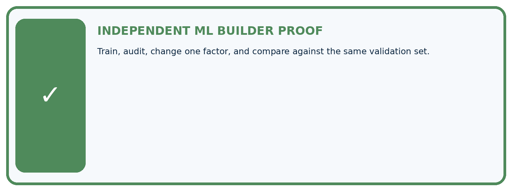
What success looks like
REQUIRED PROOF Train, audit, change one factor, and compare against the same validation set.
□ Define the task, feature/target roles, and intended-use boundary.
□ Show the calculation, code trace, or experiment record.
□ Test a normal case and one revealing boundary, missing, or shifted case.
□ Diagnose one failure without changing several factors at once.
□ Name a limitation, fairness concern, and the human-review action.
Independent evidence and defense:
My level: □ Not yet □ With one hint □ Independently □ I can teach and defend it
Connect to the next lesson
NEXT BRIDGE Carry the experiment evidence into: ML Builder Expo.
Student lesson · 13 of 18
Study a complete case
Revisit the complete Capstone Train, Analyze, Improve case for supported practice. Repeated examples do not become fresh assessments.
Week 35 Worked case
Use the supplied details to practise the weekly concept before attempting the independent question. This case extends the illustrated lesson.
The situation
Baseline validation accuracy70%; model80%; most remaining errors are dim images.
The question
Plan improvement evidence.
Worked explanation
Keep partitions fixed, inspect dim-image errors, change one factor and compare the same validation criteria/slices. Reserve final test.
Explain it in your own words
Which detail supports the answer, and why does it matter?
Trace the supplied case visually
Keep improvement evidence comparable
| Evidence or stage | Value or result |
|---|---|
| Baseline | Seventy percent validation accuracy |
| Model | Eighty percent on the same set |
| Error slice | Many failures in dim images |
| Next revision | Change one factor and retain final test |
Baseline validation accuracy70%; model80%; most remaining errors are dim images.
Plan improvement evidence.
Keep partitions fixed, inspect dim-image errors, change one factor and compare the same validation criteria/slices. Reserve final test.
Student lesson · 14 of 18
Try a new case independently
Attempt the reserved new case before feedback. Record support; the earlier examples below remain additional practice.
Independent case: Apply independently
Frozen candidate[[6, 2],[1, 3]] and baseline[[8, 0],[4, 0]] on 12 cases. Compute candidate metrics and compare error types.
Attempt this case before feedback. Record any help. Earlier examples below are further practice; a case already practised with feedback cannot establish fresh transfer.
Week 35 Independent application
Close the worked explanation. Apply the idea to this different question without copying.
A revision raises overall validation accuracy from 80% to 84% but lowers dim-light accuracy from 60% to 40%. How should the improvement claim change?
My answer, with a trace, calculation or supporting evidence
Create and test
Change one relevant detail. Predict the result before testing. Include a boundary or missing-information case when it helps reveal a limit.
My changed input and expected result
Connect to your project
Finalize the Plant Classifier experiment record, confusion matrix, subgroup table, model card, and honest remaining-limit statement.
The evidence I will keep
Your teacher has the independent answer and scoring criteria. Complete the matching workbook week to keep your practice evidence together.
Transfer practice from the original programme
A new model reduces validation errors from 8 to 5 but the team also removed three hard cases. Can improvement be attributed to the model? Propose a repair to the experiment.
Use feedback to improve
Attempt the independent case before hints. Record whether you worked alone, used a hint or followed a model. After feedback, fix the first unsupported step and explain why it changed.
A later check uses a changed case, not a copied answer.
Student lesson · 15 of 18
Your lesson route
Use this map to navigate Capstone Train, Analyze, Improve, connect the goals to tasks and keep one evidence record for each attempt.
Start with this question: Choose the next capstone revision from explicit false alarms and misses.
| By the end, I can | How I will show it |
|---|---|
| Run a frozen final evaluation with complete accounting | Explain the deciding step, show a trace or test, and state one limit. |
| Separate error analysis from an untouched-test claim | Explain the deciding step, show a trace or test, and state one limit. |
| Document revisions and their evidence status | Explain the deciding step, show a trace or test, and state one limit. |
Remember → watch and explain → try with help → investigate → try independently → keep project evidence. Your teacher may spread this lesson across several classes.
Keep your first prediction. Compare it with what the evidence shows and explain any change.
Student lesson · 16 of 18
Finish and return
Explain Capstone Train, Analyze, Improve without notes, identify a remaining question and plan a later check with a changed case.
Close your notes. Explain this goal in your own words: Run a frozen final evaluation with complete accounting
If you are unsure, return to the worked picture and explain one arrow. If you are ready, change an input or assumption and justify your prediction.
Save your workbook evidence. At the next review, try a different case before opening your old answer.
Student lesson · 17 of 18
Supported practice, repair and portfolio
Attempt supported questions before using hints or feedback. Review a missing building block, then keep the completed work.
Use this supported practice once, in the browser or on paper. Keep the reserved independent assessment for a separate first attempt before teacher feedback.
Choose the next capstone revision from explicit false alarms and misses.
Practice 1: explain the deciding evidence
Which labelled step matches this detail? Review candidate’s two misses and one false alarm with conditions and label evidence before revising.
1. Inspect errors
2. Compare accuracy
3. Compare detection
Hint · try first
Hint if needed: Read the steps in the pictorial case. Match the supplied detail to the stage that performs or records it.
Feedback · compare after trying
After your attempt, compare with the supported explanation: Inspect errors Review candidate’s two misses and one false alarm with conditions and label evidence before revising. Read the picture in order.
Review candidate’s two misses and one false alarm with conditions and label evidence before revising. The arrows show which recorded input or intermediate result each decision uses.
Explain the deciding step aloud before checking the changed case; pointing to the final answer alone does not show how it follows.
Practice 2: explain the deciding evidence
Changed case · predict first
Changed-case practice: A revision fixes one miss but creates two extra false alarms. Which conclusion is supported by the supplied facts?
1. We can decide the result without examining the changed input or the procedure.
2. TP 5, FN 1, FP 3, TN 7 gives 12/16=75% accuracy and 5/6 recall.
3. This one example guarantees correct results for every future input.
Hint · try first
Hint if needed: Use the changed condition and the deciding step in the pictorial trace. The answer must say what follows from those facts.
Feedback · compare after trying
After your attempt, compare with the supported explanation: TP 5, FN 1, FP 3, TN 7 gives 12/16=75% accuracy and 5/6 recall. Recall rises while accuracy falls; the preferred revision depends on declared error consequences.
Repair a missing building block
Review Capstone Dataset and Baseline (ai-4/34). Goal: Define a feasible capstone question and acceptance criteria. Short practice: What provenance field prevents the crop from appearing independent?
Point to the relevant step in the picture, then write the changed result and the rule or evidence that supports it.. Return to this week and explain what you changed.
Review Proxy Features and Fairness (ai-4/32). Goal: Identify possible proxy features. Short practice: What evidence contradicts the original “all setting information removed” claim?
Point to the relevant step in the picture, then write the changed result and the rule or evidence that supports it.. Return to this week and explain what you changed.
Review Feature Engineering (ai-4/29). Goal: Create features available at prediction time. Short practice: What should be saved so another group transforms the query identically?
Point to the relevant step in the picture, then write the changed result and the rule or evidence that supports it.. Return to this week and explain what you changed.
Keep your completed work
Use Download completed work in the hosted lesson to export your answers, reflections, practice feedback and code-run evidence. Open the HTML copy to read or print it.
Drafts stay in this browser when storage is available; clear drafts on a shared device.
Student lesson · 18 of 18
Visual concept journey
Explain each Capstone Train, Analyze, Improve graphic using its labels, deciding evidence and relevant limitation.
01. Capstone Train, Analyze, Improve: the case
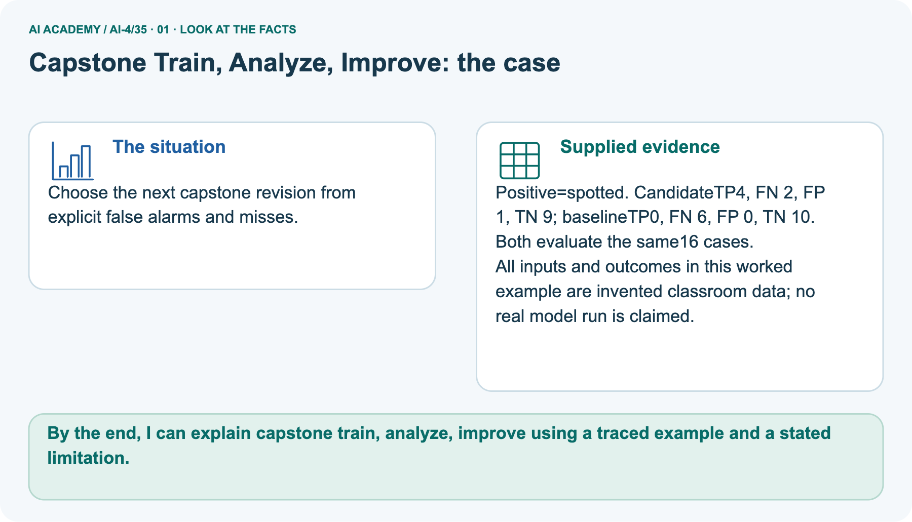
Choose the next capstone revision from explicit false alarms and misses. Supplied facts: Positive=spotted. CandidateTP4, FN 2, FP 1, TN 9; baselineTP0, FN 6, FP 0, TN 10. Both evaluate the same16 cases.
All inputs and outcomes in this worked example are invented classroom data; no real model run is claimed.
Point to the given fact that matters most. Explain why it matters.
02. Follow the deciding steps
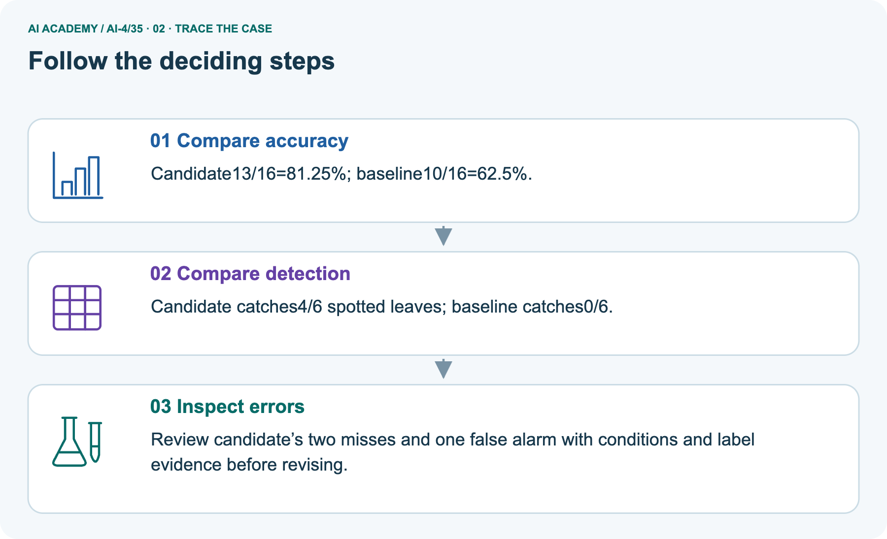
Compare accuracy: Candidate13/16=81.25%; baseline10/16=62.5%. → Compare detection: Candidate catches4/6 spotted leaves; baseline catches0/6. → Inspect errors: Review candidate’s two misses and one false alarm with conditions and label evidence before revising.
Point to each numbered stage and explain which recorded input it uses.
03. Candidate, before revision
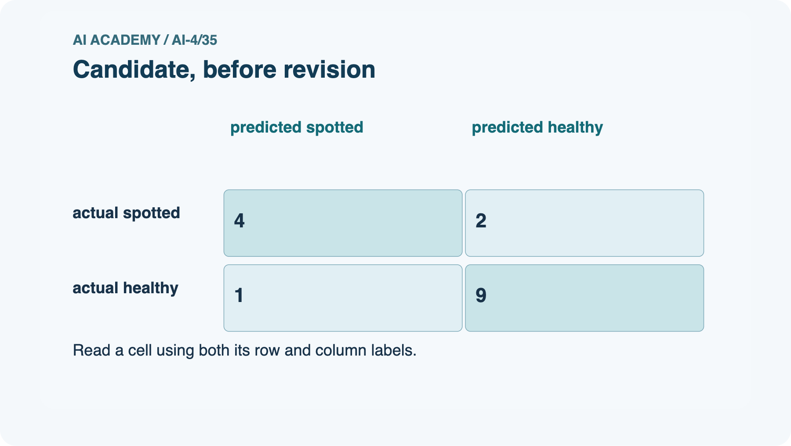
Candidate, before revision. actual spotted: predicted spotted = 4, predicted healthy = 2. actual healthy: predicted spotted = 1, predicted healthy = 9.
Read the labels and values. Explain the relationship the model shows.
04. Change one thing. Trace what follows.
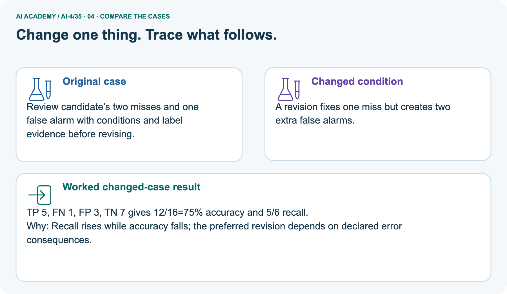
Original case: Review candidate’s two misses and one false alarm with conditions and label evidence before revising. Changed condition: A revision fixes one miss but creates two extra false alarms.
Expected result: TP 5, FN 1, FP 3, TN 7 gives 12/16=75% accuracy and 5/6 recall. Reason: Recall rises while accuracy falls; the preferred revision depends on declared error consequences.
Predict before checking the worked changed-case result. Name what changed and what the supplied facts allow you to conclude.
05. Connect the explanation to its limit
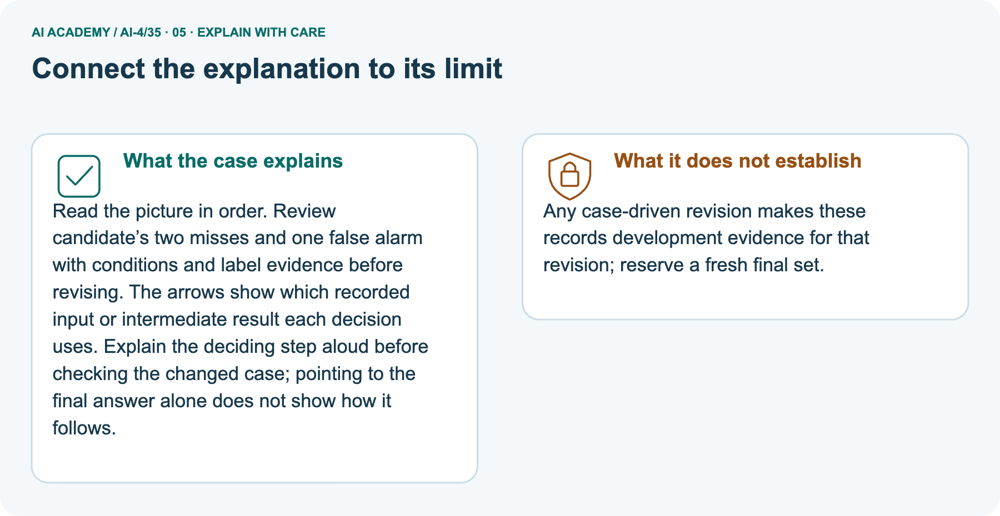
Read the picture in order. Review candidate’s two misses and one false alarm with conditions and label evidence before revising. The arrows show which recorded input or intermediate result each decision uses.
Explain the deciding step aloud before checking the changed case; pointing to the final answer alone does not show how it follows.
Limit: Any case-driven revision makes these records development evidence for that revision; reserve a fresh final set.
Explain the case, then point to a limit on the claim.
06. Make the idea visible in your project
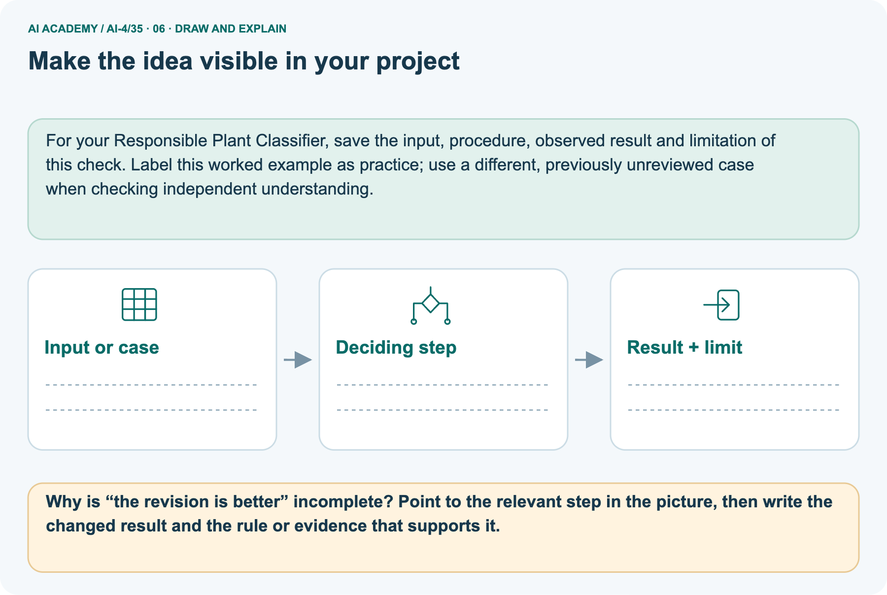
For your Responsible Plant Classifier, save the input, procedure, observed result and limitation of this check.
Label this worked example as practice; use a different, previously unreviewed case when checking independent understanding. Draw your input, deciding step, result and limit.
Supported question: Why is “the revision is better” incomplete? Point to the relevant step in the picture, then write the changed result and the rule or evidence that supports it.
Draw your project trace and justify the deciding step using evidence.